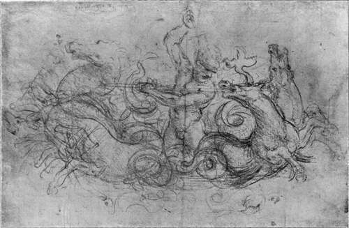

The Pictures. Part 6
Description
This section is from the book "Leonardo Da Vinci", by Edward McCurdy. Also available from Amazon: Leonardo Da Vinci.
The Pictures. Part 6
In the Louvre picture the head of Christ is not in exact profile, but is a shade nearer to full face. A little bit of the arch of the temple over the far eye is visible ; and certainly more of the forehead and the upper lip than is seen in exact profile.
In the National Gallery picture and the Windsor drawing the head is in exact profile, and it is seen on the level. In the Louvre it leans over slightly, the weight of the body being thrown more completely on the left arm. More of the top of the head is visible in consequence, and the chin is thrown more in shadow. The modelling of the whole of the lower part of the face is that of a younger child.
This consideration of drawings suggests that neither picture is a copy of the other. This becomes evident in the further examination of detail. There is primarily the complete difference of composition in the right hand of the angel, visible in the Louvre picture, above the head of Christ with extended forefinger, and omitted in the National Gallery picture. Moreover, the arrangement of drapery on the left arm of the angel is also entirely dissimilar in the two pictures. The same is also true of the folds of the Virgin's mantle. In the Louvre picture her left hand is extended over Christ, the fingers coming forward in almost exact foreshortening. In the National Gallery picture the hand is extended, but the gesture is entirely modified, and the fingers are slanting to the left.
The body of the S. John in the Louvre picture is seen more in profile, and is leaning forward at a sharper angle; it is more expressive of the impetus of movement than in the National Gallery-picture.
These differences, arising from the use of different studies, are such as a copyist would not have made. The connection of each picture with Leonardo's drawings is direct and primary.
The Louvre picture is first mentioned in the " Diarium" of Cassiano del Pozzo, who visited Fontainebleau in 1625. It was then in the Royal collection. He says nothing as to its earlier history. His description is curiously inexact in omitting any reference to the angel and speaking of the picture as containing three figures, viz. the Madonna, the Child and S. John.
The omission is repaired in the description by Pere Dan, who visited Fontainebleau in 1642: "Notre Dame avec un petit Jesus qu'un Ange appuye."
The collection, as it then existed, had been formed, Pere Dan states, by Francis I., Henry II., Charles IX., Henry le Grand and Louis XIII. He specifies Leonardo as one of seven Italian painters whose works they had collected.
Of the four Raphaels which he describes, he mentions three as having been in the possession of Francis I., and the fourth as having belonged to Henry le Grand.
Of the pictures by Leonardo which he mentions, the Mona Lisa is stated to have been acquired by Francis I.; but nothing is said as to how or when any of the others came to form part of the Royal collection.
Since the time of Francis I. the collection had been added to under every subsequent monarch.
The testimony of Pere Dan, like that of Cassiano del Pozzo, consequently only establishes that the Louvre picture formed part of the Royal collection at the date of his description. It may have belonged to Francis I., but the fact of it occurring in these inventories is not evidence that it did.
Plate 31. Neptune
Study For A Picture - New Gallery Portfolio - Royal Library, Windsor
The picture in the National Gallery is described by Lomazzo in 1584, it being then in the Chapel of the Conception in the Church of S. Francesco at Milan. It was removed from the church in 1777; sold for thirty ducats to an English collector; was afterwards in the Earl of Suffolk's collection, from which it was acquired for the National Gallery.
The external evidence commences in the case of the one picture in 1625, of the other in 1584.
The earliest record of the composition is a petition discovered in the Milanese State Archives, and first published in 1893 in the Arch. Stor. Lomb. XX. It is addressed to the Duke by " Johanne Ambrosio preda et Leonardo de Vinci Fiorentino," asking that he should intervene in the matter of their contract with the brotherhood of the Conception of S. Francesco at Milan to make an altar-piece of figures in relief covered with fine gold; a picture of the Madonna in oils; and two pictures of two angels, also in oils. They state that they have already incurred in expenses the whole amount fixed on as their remuneration by the brotherhood, who have valued at twenty-five ducats the said Madonna in oils, " by the said Florentine," although the list of expenses proves it to be worth a hundred ducats, and this sum has been offered for it by would-be purchasers.
Their request is that the Duke should compel the brotherhood either to pay a proper price, re-valuing the picture upon oath, or abiding by the decision of experts properly appointed, or to restore the said Madonna painted in oil to the said petitioners.
We do not know whether the Duke did anything or nothing, or whether the upshot was that the brotherhood restored the picture, or kept the picture and paid an additional sum, or kept the picture and did not pay more than they had agreed upon, or who were the would-be purchasers who had offered more.
The petition lends no colour to any suppositions on these points. Its tone does not suggest any superabundant confidence in the minds of the petitioners that there would be any reply at all.
There are fragments of other petitions from Leonardo to Ludovic, referring to arrears of his salary, but no record of their having been acceded to.
The importance of the petition lies not in what may be conjectured from it, but in what it states, viz., that at the time at which it was presented-which a document1 still more recently discovered in the Milanese Archives belonging to the same suit would fix as between 1491 and 1494-a picture of the Madonna by Leonardo had been executed for, and had passed into the possession of, the monks of S. Francesco at Milan. Consequently, although there is no direct evidence of identity, the most natural interpretation of the document is that it is a strong piece of testimony of the authenticity of the picture which was in the church of S. Francesco in 1584, at which time it was described by Lomazzo as a characteristic work by Leonardo.
Continue to:
Tags
leonardo da vinci, pictures, drawings, galleries, statues, da vinci